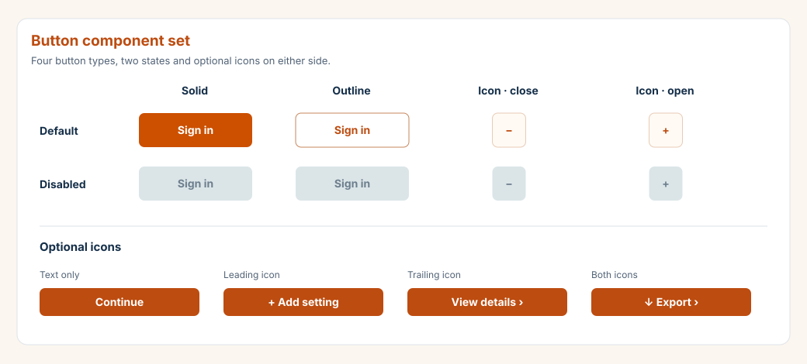
SMS360 · Design system
Reusable components, interaction states and role-based navigation for school administration.
Jill Nguyen · Business Analyst
I turn stakeholder needs into business rules, Figma prototypes, data models and API specifications that delivery teams can build and test.
Business rule
Review incomplete requests

I use Figma to turn requirements into screen mockups, reusable components and prototypes that make behaviour clear for developers and testers.

Reusable components, interaction states and role-based navigation for school administration.

Course-section forms that translate enrollment rules into fields and controls.

Wireframes and high-fidelity screens for an oral-health results flow.
BachKhoaTech product suite
School administration, university operations, online learning, digital libraries and assessment.
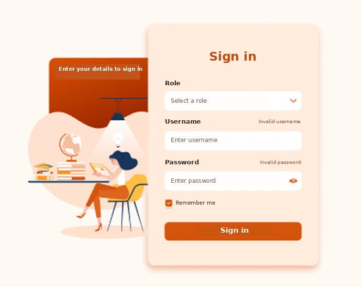
BachKhoaTech · School management
How I specified a digital homeroom notebook and a school-wide grade-visibility rule for the web and mobile school management products.
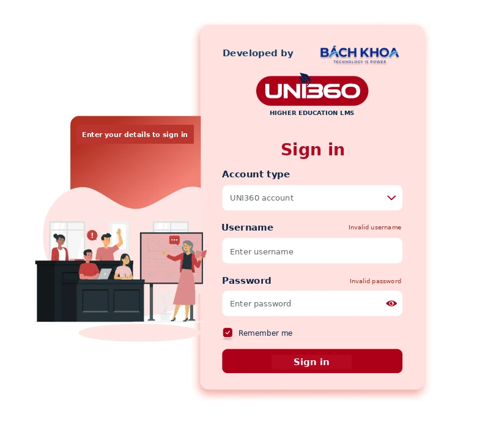
Higher education · Systems design
Requirements, data and process models for universities to manage academic structures and enroll students in the right course section.
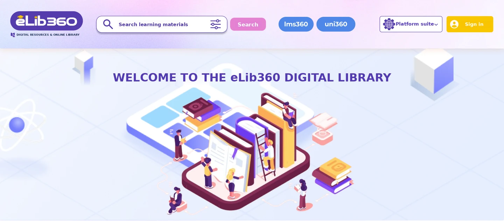
BachKhoaTech · Digital library
Discovery, filter dependencies and access requirements for a shared digital learning library.
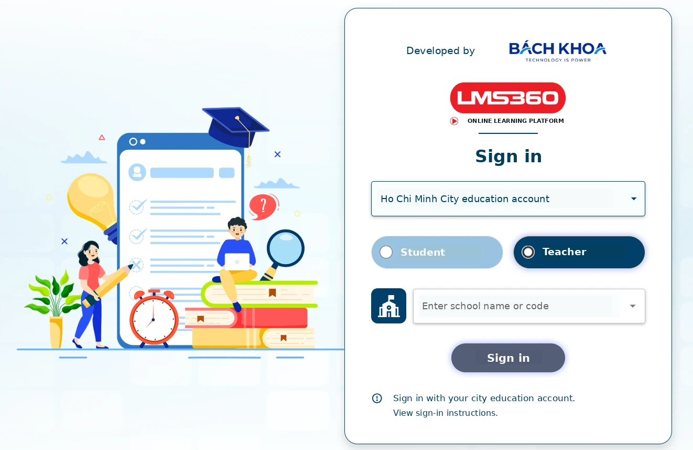
BachKhoaTech · Learning platform
Teacher and learner workflows for speaking practice, plus placement requirements for admissions campaigns.
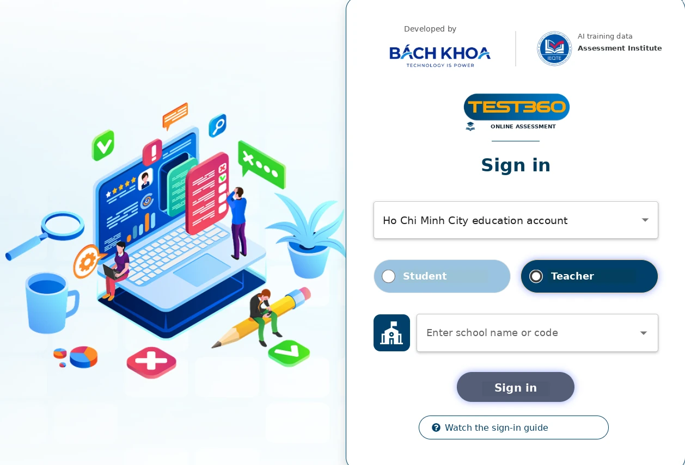
BachKhoaTech · Digital assessment
Teacher assessment and score synchronization design, including how users review the selected destination and converted results.
Business analysis work samples
Open the artifacts that connect a business rule to a screen, contract or testable outcome.
Project portfolio
Client projects, product prototypes and technical work.
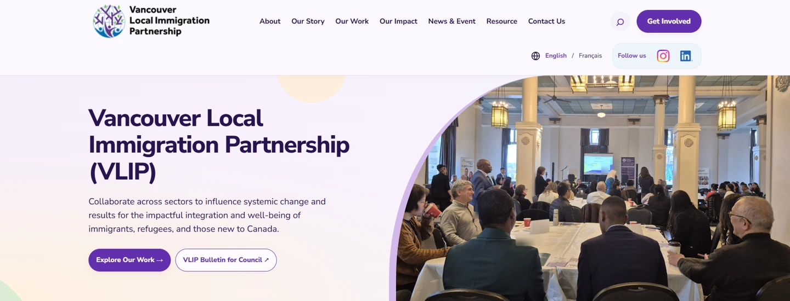
Vancouver Local Immigration Partnership · Redesign
A homepage redesign for a Vancouver partnership supporting newcomer inclusion.
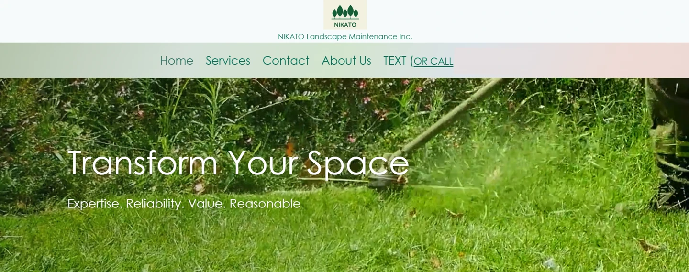
Small business · Customer journey
A landscaping service website with service information and a quote request path.
Business case · Launch planning
Evaluated an AI integration venture and used market, operations, finance and risk analysis to shape launch requirements.
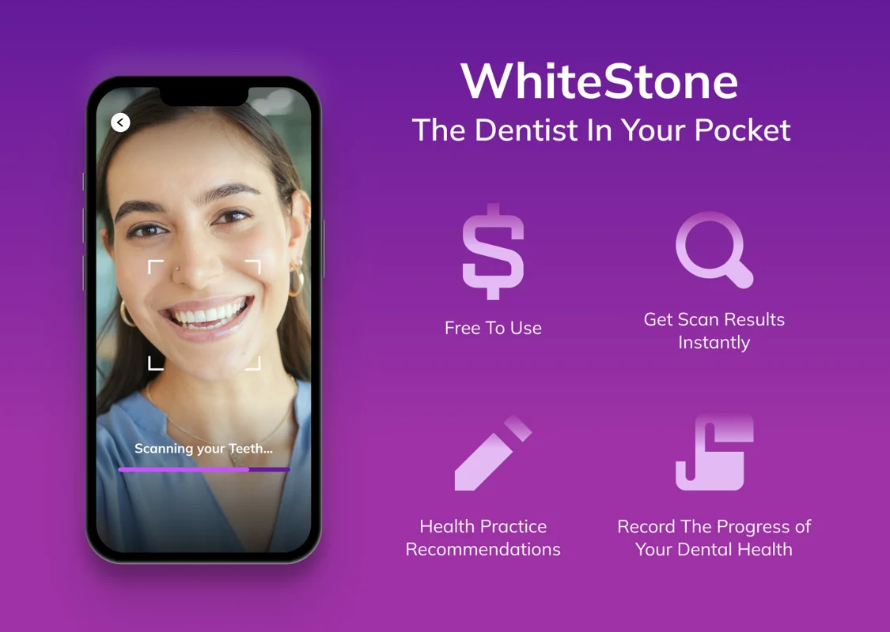
BCIT · Product prototype
A BCIT team prototype that turns an oral-health scan result into severity information and supporting resources.
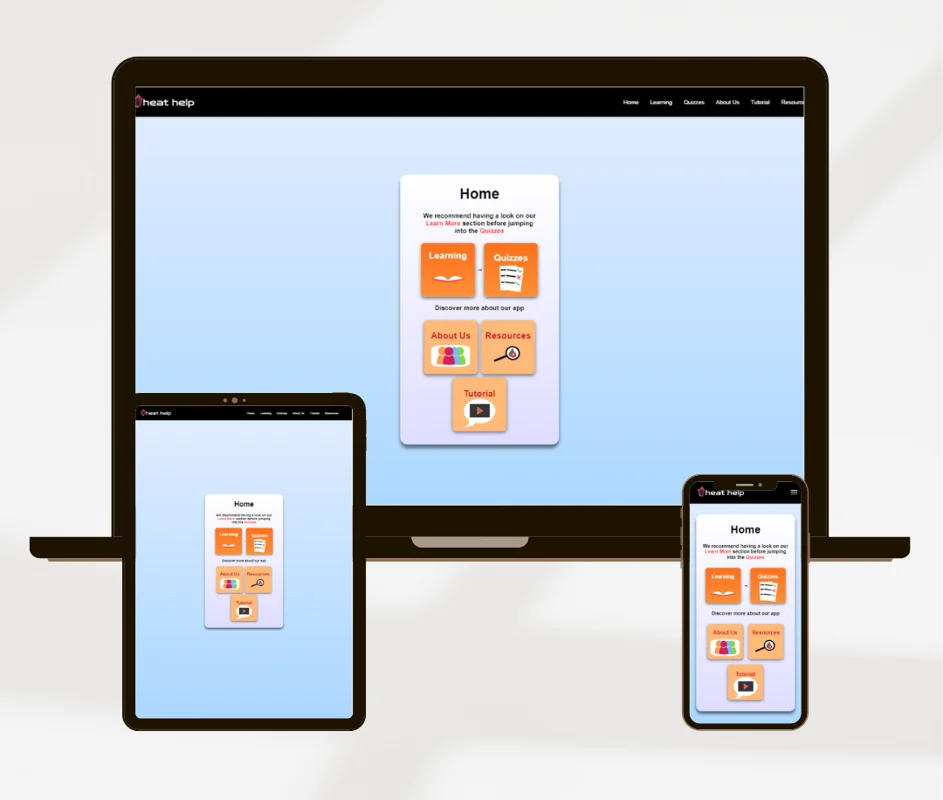
Product prototype · Learning flows
A team-designed fire safety learning prototype with topic-based learning, quizzes and a progress indicator.
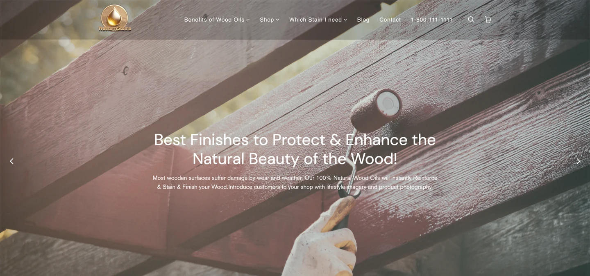
Client project · E-commerce
Gathered client requirements and structured a Shopify store around how customers choose and purchase wood oils.
BCIT · API integration
Mapped a location query to weather data and implemented current conditions, forecasts and failed-request handling.
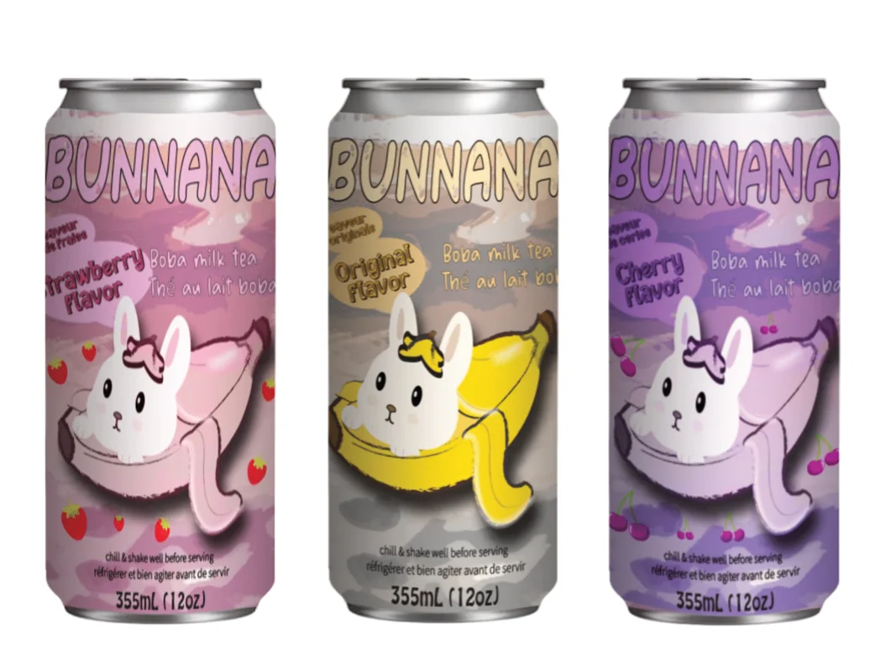
Beverage packaging concept and visual identity
Animated information video about pet ownership
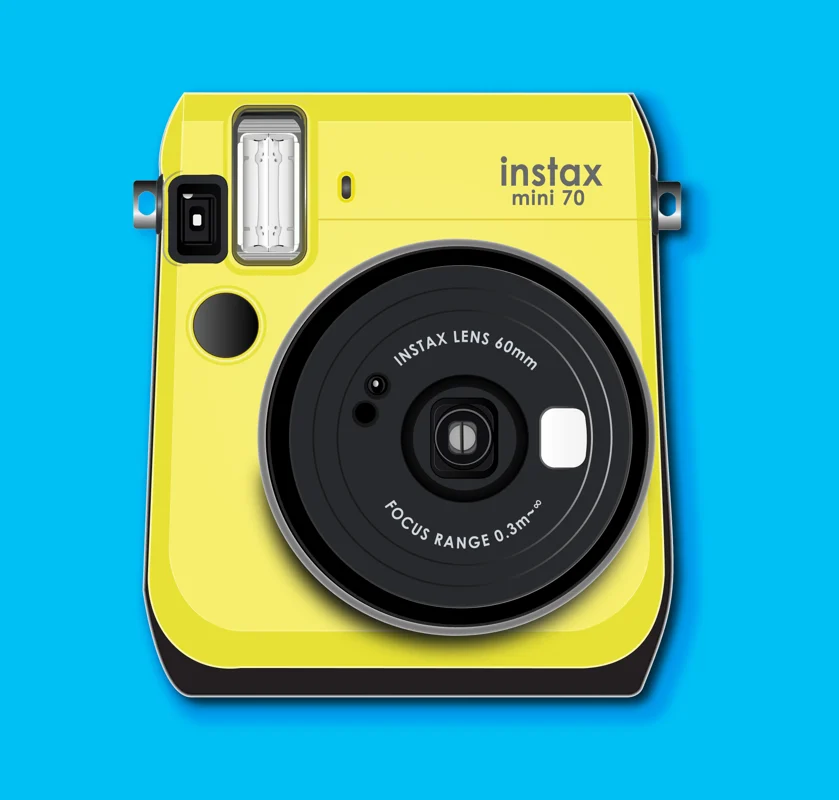
Digital illustration of a Polaroid camera
About me
I worked as a business analyst on BachKhoaTech’s school-management products and now support web and communications work at the Vancouver Local Immigration Partnership. I hold the IIBA Entry Certificate in Business Analysis and a BCIT Digital Design and Development diploma. I’m completing my BBA at BCIT with an expected graduation date of September 2027.
Contact
For business analysis opportunities or questions about a case study, send me an email.